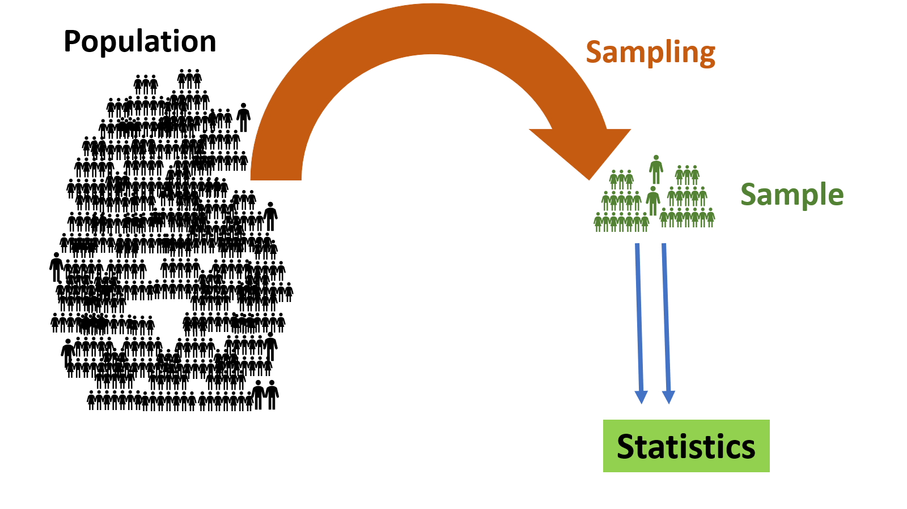
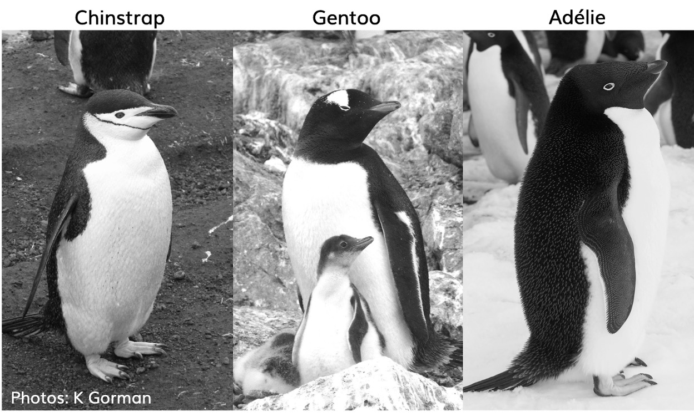

Biostatistics and Data Analysis
Basic Terminologies and Concepts in Statistics
Dr. Thiyanga S. Talagala
Department of Statistics, Faculty of Applied Sciences
University of Sri Jayewardenepura, Sri Lanka
Department of Statistics, Faculty of Applied Sciences
University of Sri Jayewardenepura, Sri Lanka
Population
The complete collection of individuals or objects that are of interest.
Example
- Population
We’re interested in studying the average height of all adults in a country, the population is all adult residents of that country.
Unit
A unit is a single member of the population. It could be an individual or an object.
Unit
A unit is a single member of the population. It could be an individual or an object.
Example
- Population
We’re interested in studying the average height of all adults in a country, the population is all adult residents of that country.
- Unit
In our example of studying adult height, each adult residing in the country would be a unit.
Sample
A subset of units in a population.

Sample
A subset of units in a population.
Sampling
Sampling is the process of selecting a subset of individuals or items from a population.

Statistics
A numerical summary of a sample.

Parameter
A numerical summary of a population.

Inferential Statistics
Inferential Statistics

Two Branches of Statistics
1. Descriptive Statistics
2. Inferential Statistics
Two Branches of Statistics
1. Descriptive Statistics
Describe and summarize the collected data through numerical summaries, tables, and graphs.
2. Inferential Statistics
Two Branches of Statistics
1. Descriptive Statistics
Describe and summarize the collected data through numerical summaries, tables, and graphs.
2. Inferential Statistics
Statistical inference refers to the methods used to make estimations, decisions, or predictions about a population parameters based on the statistics computed from a sample that was selected from that population.
In-class demo
About the data
Data were collected and made available by Dr. Kristen Gorman and the Palmer Station, Antarctica LTER, a member of the Long Term Ecological Research Network.
# A tibble: 344 × 8
species island bill_length_mm bill_depth_mm flipper_length_mm body_mass_g
<fct> <fct> <dbl> <dbl> <int> <int>
1 Adelie Torgersen 39.1 18.7 181 3750
2 Adelie Torgersen 39.5 17.4 186 3800
3 Adelie Torgersen 40.3 18 195 3250
4 Adelie Torgersen NA NA NA NA
5 Adelie Torgersen 36.7 19.3 193 3450
6 Adelie Torgersen 39.3 20.6 190 3650
7 Adelie Torgersen 38.9 17.8 181 3625
8 Adelie Torgersen 39.2 19.6 195 4675
9 Adelie Torgersen 34.1 18.1 193 3475
10 Adelie Torgersen 42 20.2 190 4250
# ℹ 334 more rows
# ℹ 2 more variables: sex <fct>, year <int>
Source: https://allisonhorst.github.io/palmerpenguins/

source: https://education.rstudio.com/blog/2020/07/palmerpenguins-cran/
Census
A census involves collecting information from every individual or unit within the entire population of interest.
Sample Survey
A survey involves collecting information from a subset (sample) of the population to estimate characteristics of the entire population.
Notations
Parameters are usually denoted by Greek letters
Example:
\(\mu - \text{population mean}\)
\(\sigma - \text{population variance}\)
Statistics are denoted by English letters (Capital or Simple? You will learn more of this in your “Statistical Inference” course)
Eample:
\(\bar{X} - \text{sample mean}\)
\(S^2 - \text{sample variance}\)
Inclass demo
The value of the population parameter does not change.
Sample statistics vary from sample to sample.
Your turn: Question 1
A researcher is studying the biodiversity of Beira Lake. To estimate the proportion of species counts, he took a bucket of water (1L) from the lake and counted how many species of bacteria, bugs, and other creepy crawlies he found in the bucket.
Identify the following terms related to this study:
Population
Sample
Parameter
Statistics
06:00
Your turn: Question 2
A researcher wants to estimate the failure rate of hard disk drives (HDDs) produced by a computer manufacturing company. The researcher randomly selects 100 HDDs from a recent production batch and examines them for signs of malfunction or failure.
Identify the following terms related to this study:
Population
Sample
Parameter
Statistics
05:00
Your turn: Question 3
The lecturer-in-charge is interested in estimating the proportion of students who actively listened to the lecture during today’s online Zoom sessions. She randomly selects 50 students and asks questions related to the content covered during the lecture.
Identify the following terms related to this study:
Population
Sample
Parameter
Statistics
05:00
Your turn: Question 4
A researcher is interested in estimating the mean monthly expenditure of government university students on educational expenses. The researcher randomly selects 100 government university students and asks them to report their total educational expenditure for the last month. Based on the observed values, the researcher computed the sample mean.
Identify the following terms related to this study:
Population
Sample
Parameter
Statistics
05:00
Your turn: Question 5
The government wants to assess the willingness of all government officers earning a salary of Rs 100,000 to purchase electric vehicles. The government has posted a questionnaire to every government officers earning this salary. Identify whether this process is a census or a survey. Provide a justification for your answer.
04:00
Your turn: Question 6
The government wants to assess the willingness of government officers earning a salary greater than Rs 100,000 to purchase electric vehicles. They have posted a questionnaire to a sample of government offices where officers earn salaries above this threshold. Identify whether this process is a census or a survey. Provide a justification for your answer.
04:00
Copyright
Up until slide 13 and slides 23-26, every image has been authored by Dr Thiyanga S. Talagala. Hence, all images up to slide 14 and 23-26 are copyrighted by Thiyanga S. Talagala.